품질경영기사 (2013-03-10 기출문제)
1과목: 실험계획법
1. 반복수가 일정치 않은 변량모형의 경우 급간분산 (VA)의 불편추정값
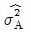
은? (단, ℓ의 수준수, mi:i 수준의 반복수, N：총 데이터의 수, Ve：오차분산이다.)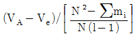
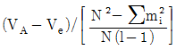
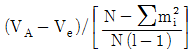
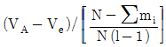
(정답률: 56%)
2. L27(313)직교배열표에서 기본표시가 ac인 곳에 P, bc인 곳에 Q를 배치하면 P×Q가 나타나는 열의 기본 표시는?
- abc2과 ab2인 두열
- ab2과 c인 두열
- abc과 bc2인 두열
- ab2과 bc2인 두열
(정답률: 62%)

3. 어떤 화학반응 실험에서 농도를 4수준으로 반복수가 일정하지 않은 실험을 하여 다음 표와 같은 결과를 얻었다. 분산분석 결과 Se=2,508.8이었다. μ(A3)의 95% 신뢰구간을 추정하면 약 얼마인가? (단, t0.975(15)=2.131, t0.95(15)=1.753 이다.)
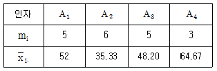
- 37.938≤μ(A3)≤58.472
- 38.061≤μ(A3)≤58.339
- 35.555≤μ(A3)≤60.845
- 35.875≤μ(A3)≤60.525
(정답률: 62%)
4. 실험계획법에서 변량인자가 유의적일 경우 무엇을 추정하는 것이 가장 적절한가?
- 모평균 추정
- 변이계수 추정
- 모분산 추정
- 미드레인지 추정
(정답률: 83%)
5. 반복이 있는 모수모형 2원 배치에서 다음의 실험데이터를 얻었다. ( )은 결측치이다. 이 결측치를 추정하여 넣은 후에 분산분석을 실시할 때 오차항의 자유도(νe) 는?
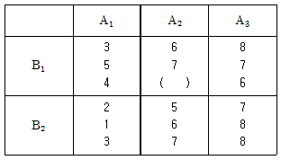
- 5
- 11
- 12
- 17
(정답률: 58%)
6. A인자 ℓ수준, B인자 ℓ수준인 이원배치(A, B모수)에서 반복 r회 실험하여 분산분석표를 작성하였다. 추정에 관한 내용 중 올바른 것은?
- Ai수준에서 모평균의 100(1-α/2)신뢰구간＝
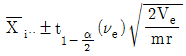
- Bj수준에서 모평균의 100(1-α/2)신뢰구간＝
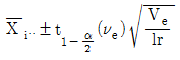
- Ai수준에서 모평균의 100(1-α/2)신뢰구간＝
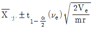
- Bj수준에서 모평균의 100(1-α/2)신뢰구간＝
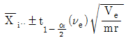
(정답률: 66%)
7. 두 변수 X, Y 간에 다음의 데이터가 얻어졌다. 단순 회귀식을 적용할 때 회귀에 의하여 설명되는 변동 SR을 구하면?
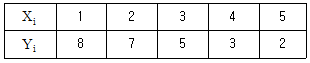
- 0.4
- 0.98
- 25.6
- 26.0
(정답률: 65%)
8. 두 개의 대비를 L1=ℓ11A1+ℓ12A2+…+ℓ1aAa, L2=ℓ21A1+ℓ22A2+…+ℓ2aAa라고 하면 ℓ11ℓ21+ℓ12ℓ22+…ℓ1aℓ2a=0이 성립할 때 L1, L2는 무엇을 하고 있다고 할 수 있는가?
- 종속
- 직교
- 교호작용
- 교락
(정답률: 80%)
9. I＝ABCDE＝ABC＝DE 의 별명 관계 중 틀린 것은?
- A＝BCED＝BC＝ADE
- B＝ACDE＝AC＝BDE
- C＝ABDE＝AB＝CDE
- D＝BCE＝BCD＝AE
(정답률: 77%)
10. 인자수가 3개(A, B, C)인 반복이 없는 3원 배치실험의 분산분석표에 있어서 요인 B×C 의 제곱평균의 비 F0는 약 얼마인가?(단, A, B, C 인자는 모두 모수이다.)
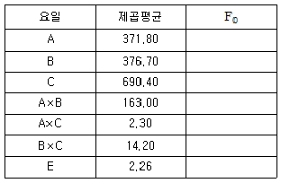
- 6.28
- 26.18
- 26.53
- 48.62
(정답률: 68%)
11. 2×2 라틴방격의 총 수는?
- 1
- 2
- 3
- 4
(정답률: 68%)
12. 실험계획법과 관련된 용어에 대한 설명으로 옳지 않은 것은?
- 실험을 실시한 후에 데이터의 형태로 얻어지는 반응치를 인자(Factor)라고 한다.
- 실험에 있어서 데이터에 산포를 준다고 생각되는 무수히 존재하는 원인들 중에서 실험에 직접 취급되는 원인을 인자라 한다.
- 실험을 하기 위한 인자의 조건을 인자의 수준이라 한다.
- 실험을 시간적 혹은 공간적으로 분할하여 그 내부에서 실험의 환경(실험의 장)이 균일하도록 만들어 놓은 것을 블록(Block)이라 한다.
(정답률: 63%)
13. 1차 단위가 1원 배치인 단일분할법에서 A를 1차 단위, B를 2차 단위로 블록반복 2회의 분할실험을 하여 다음과 같은 블록반복(R)과 A의 2원표를 얻었다. 블록반복(R)간의 제곱합 SR을 구하면? (단, m은 B의 수준수이다.)
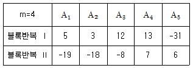
- 22.5
- 28.9
- 42.0
- 225.4
(정답률: 45%)
14. 완전 랜덤화 배열법(Completely Randomized Design)의 장점이 아닌 것은?
- 처리(Treatment)수나 반복(Replication)에 제한이 없어 적용범위가 넓다.
- 처리별 반복수가 다를 경우에도 통계분석이 용이하다.
- 일반적으로 다른 실험계획보다 오차제곱합(Error Sum of Square)에 대응하는 자유도가 크다.
- 실험재료(Experimental Material)가 이질적(Nonhomogeneous)인 경우에도 효과적이다.
(정답률: 79%)
15. TV의 이상적인 색상밀도 값이 m 이고 규격이 m±10 으로 주어져 있다. 제품의 품질 특성치가 규격을 벗어나는 경우 5,000원의 비용이 발생한다고 한다. 다구찌 손실함수를 사용한다고 할 때 비례상수 k의 값은?
- 5
- 10
- 50
- 500
(정답률: 67%)
16. 수준의 선택이 램덤으로 이루어져서 기술적인 의미를 갖지 못하는 인자는?
- 모수인자
- 표시인자
- 동적인자
- 변량인자
(정답률: 75%)
17. 22요인실험법(Factorial Design)을 사용, 2회 반복(Two Replication)실험하여 다음과 같은 결과를 얻었다. A의 효과는?
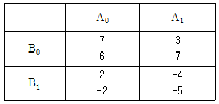
- －3
- －4
- －5
- －6
(정답률: 68%)
18. 적합품을 0, 부적합품을 1로 표시한 0, 1의 데이터 해석에서 각 조합마다 각각 10회씩 되풀이 한 결과는 다음 [표]와 같았다. 전 변동 ST는 약 얼마인가?(오류 신고가 접수된 문제입니다. 반드시 정답과 해설을 확인하시기 바랍니다.)
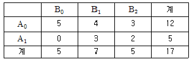
- 53.37
- 16.52
- 7.37
- 2.97
(정답률: 60%)
19. 다음은 모수인자 A와 변량인자 B인 난괴법의 데이터 구조식이다. 기본가정이 아닌 것은? (단, 구조식 xij=μ+ai+bj+eij이며, i=1,2,3,… , ℓ, j=1,2,3, …, m 이다.)
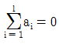
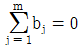
- bj~N(0, σ2B)
- eij~N(0, σ2e)
(정답률: 76%)
20. 23형의 1/2 일부실시법에 의한 실험을 하기 위해 다음과 같이 블록을 설계하여 실험을 실시하였다. 다음 중 실험결과에 대한 해석으로서 옳지 못한 것은?
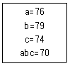
- 인자 A의 효과는 A=1/2(76-79-74+70)=-3.5이다.
- 블록에 교락된 교호작용은 A×B×C 이다.
- 인자 A의 별명은 교호작용 B×C 이다.
- 인자 A의 변동은 인자 C의 변동보다 크다.
(정답률: 67%)
2과목: 통계적품질관리
21. 계수치 축차샘플링 검사방식(KS Q ISO 8422：2009)에서 PR(CRQ)이 뜻하는 내용으로 가장 적합한 것은?
- 불합격시키고 싶은 로트의 부적합품률의 하한
- 합격시키고 싶은 로트의 부적합품률의 하한
- 불합격시키고 싶은 로트의 부적합품률의 상한
- 합격시키고 싶은 로트의 부적합품률의 상한
(정답률: 69%)
22. M제조공정에서 제조되는 부품의 특성치는 μ=40.10mm, σ=0.08mm인 정규분포를 하고 있다. 이 공정에서 25개를 샘플링하여 특성치를 측정한 결과  =40.12mm로 나타났다. 유의 수준 5%에서 이 공정의 모평균에 차이가 있는지를 검정한 결과는?
=40.12mm로 나타났다. 유의 수준 5%에서 이 공정의 모평균에 차이가 있는지를 검정한 결과는?
- 통계량이 1.96보다 크므로 H0 기각
- 통계량이 1.96보다 작고 －1.96보다 크므로 H0 채택
- 통계량이 1.96보다 크므로 H0 채택
- 통계량이 1.96보다 작고 －1.96보다 크므로 H0 기각
(정답률: 58%)
23. 다음 표는 주사위를 60회 단져서 1부터 6까지의 눈이 몇 회 나타나는가를 기록한 것이다. 이 주사위에 관한 적합도 검정을 하고자 할 때 검정통계량(X20)은 얼마인가?
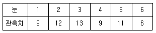
- 1.9
- 2.5
- 3.2
- 4.5
(정답률: 63%)
24. 다음 중 평균치와 분산이 같은 확률 분포는?
- 정규분포
- 이항분포
- 지수분포
- 포아송분포
(정답률: 82%)
25. 기대치와 분산의 계산식으로 옳지 않은 것은?
- E(XㆍY)＝E(X)ㆍE(Y) (X, Y는 서로 독립)
- V(X±Y)＝V(X)＋V(Y) (X, Y는 서로 독립)
- Cov(X, Y)＝0 (X, Y는 서로 독립)
- V(X)＝σ2＝E(X2)－μ
(정답률: 68%)
26. m=2인 포아송분포를 따르는 확률변수 x와 m=3인 포아송분포를 따르는 확률변수 y가 있을 때
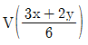
의 값은 약 얼마인가? (단, x와 y는 서로 독립이다.)- 0.50
- 0.83
- 0.96
- 2.00
(정답률: 75%)
27. 관리도에 관한 다음 내용 중 옳은 것은?
 관리도의 관리한계선은
관리도의 관리한계선은 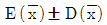
이며 시료의 크기는 √n으로 결정된다.- 공정이 관리상태에 있다고 하는 것은 규격을 벗어나는 제품이 전혀 발생하지 않는다는 것을 말한다.
 관리도에 있어 관리한계를 벗어나는 점이 많아질수록
관리도에 있어 관리한계를 벗어나는 점이 많아질수록 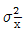
는 크게 된다.- P 관리도에서는 각 조의 샘플의 크기 n을 반드시 일정하게 하지 않아도 관리한계선은 늘 일정하다.
(정답률: 64%)
28. 어떤 부품공장에서 제조되는 부품의 특성치의 분포가 μ=3.10mm, σ=0.02mm인 정규분포를 따르며, 공정은 안정상태에 있다. 부품의 규격이 3.10±0.0392 mm 로 주어졌을 경우, 이 공정에서 발생되는 부적합품의 발생률은 약 얼마인가?
- 2.5%
- 5.0%
- 95.0%
- 97.5%
(정답률: 69%)
29. 유의수준 α 에 대한 설명으로 가장 옳은 것은?
- 귀무가설이 옳은데 기각할 확률이다.
- 공정에 이상이 있는데 없다고 판정할 확률이다.
- 관리도에서 3σ한계 대신 2σ한계를 쓰면 α는 감소한다.
- 나쁜 로트(lot)가 합격할 확률이다.
(정답률: 73%)
30. 모집단의 표준편차를 모를 때 모집단의 평균치에 관한 검정을 실시하는데 이용되는 검정 통계량은 다음과 같다. 이 통계량은 어떤 분포를 하는가?
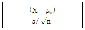
- 표준정규분포
- 자유도 n인 F 분포
- 자유도 (n-1) 인 ?2 분포
- 자유도 (n-1)인 t분포
(정답률: 60%)
31. 전선의 인장강도가 평균 44kg/mm2 이상인 로트(lot)는 합격으로 하고, 39 kg/mm2 이하인 로트는 불합격으로 하려는 검사에서 합격판정치(
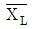
)를 구했더니 42.466 이었다. 입고된 로트에서 5개의 시료샘플을 취하여 평균을 구했더니 =41.6이었다면 이 로트의 판정은?
=41.6이었다면 이 로트의 판정은?- 불합격
- 합격
- 알 수 없다.
- 다시 샘플링해야 한다.
(정답률: 56%)
32. u 관리도에서 1,300 m 의 에나멜선의 검사에서 핀 홀이 10개 있는 경우 단위(1,000 m)당 부적합 수는 약 얼마인가?
- 2.1개
- 2.5개
- 7.7개
- 10개
(정답률: 73%)
33. 다음 4개의 OC곡선은 각각 샘플링 계획(Sampling Plan) (a) N＝1,000, n＝75, c＝1, (b) N＝1,000, n＝150, c＝2, (c) N＝1,000, n＝450, c＝6, (d) N＝1,000, n＝750, c＝10 을 나타낸 것이다. 이 중 (b)에 해당되는 OC 곡선은 어느 것인가?
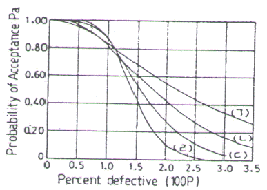
- (ㄱ)
- (ㄴ)
- (ㄷ)
- (ㄹ)
(정답률: 60%)
34. 정규형의 모집단 X~N(2, 6), Y~N(4, 9)로부터 각각 4개의 시료를 뽑았을 때, 각각의 시료평균차에 대한 분포의 표준 편차
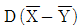
는 약 얼마인가?- 1.936
- 2.125
- 3.750
- 3.870
(정답률: 47%)
35. 취락 샘플링에 대한 설명으로 옳지 않은 것은?
- 층간 변동을 작게 할수록 유리하다.
- 서브 로트를 몇 개씩 랜덤하게 샘플링하고 뽑힌 서브로트 중의 정밀도는 층내 변동과 층간 변동 양자에 의해 결정된다.
- 취락 샘플링의 정밀도는 층내 변동과 층간 변동 양자에 의해 결정된다.
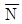
개 들이 M상자가 있을 때 이중 m 상자를 취하고, 각 상자에서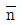
개씩 시료를 택할 때,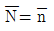
인 경우가 취락 샘플링이다.
(정답률: 43%)
36. 어떤 제품의 로트(lot)의 크기가 5,000, 부적합품률이 0.⑤ 일 때 시료의 크기가 50 이라면 부적합품수가 1일 확률은 약 얼마인가? (단, 포아송분포를 이용한다.)
- 0.15
- 0.16
- 0.17
- 0.21
(정답률: 64%)
37. 특성치의 분산이 기지인 경우에 로트의 부적합품률을 보증하기 위한 계량 규준형 1회 샘플링 검사(KS Q 1001：20⑤)에서 필요한 시료의 크기를 올바르게 나타낸 식은? (단, 생산자 위험 α=0.⑤, 소비자 위험 β=0.10, kα=1.645, kβ=1.282이다.)
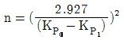
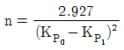
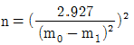
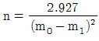
(정답률: 64%)
38. 관리도에 타점한 점이 관리한계선 밖으로 나가면 우선 어떠한 조치를 취해야 하는가?
- 규격을 개정한다.
- 관리한계선을 개정한다.
- 원인을 조사하고 이상원인을 제거한다.
- 부적합품이 나오므로 전수검사를 실시한다.
(정답률: 80%)
39. 모 부적합수 m＝25 인 공정에 대해 작업방법을 변경한 후에 확인해 보니 표본 부적합수 c＝20 으로 나타났다. 모 부적합수가 달라졌다고 할 수 있는지에 대한 판정으로 옳은 것은? (단, 유의수준 α=0.⑤ 이다.)
- u0=-1.0으로 H0 채택, 결점수가 달라지지 않았다.
- u0=-1.12으로 H0 채택, 결점수가 달라지지 않았다.
- u0=-4.8으로 H0 기각, 결점수가 달라졌다.
- u0=-5.0으로 H0 기각, 결점수가 달라졌다.
(정답률: 75%)
40. 계수치 샘플링 검사 절차-제1부：로트별 합격품질한계(AQL)지표형 샘플링검사방안(KS Q ISO 2859-1：2010)에서 검사수준에 관한 설명 중 옳지 못한 것은?
- 상대적인 검사량을 결정하는 것이다.
- 수준 Ⅲ 은 판별력이 작아도 좋은 경우에 사용한다.
- 검사수준은 소관권자가 결정한다.
- 다른 지정이 없으면 검사수준은 Ⅱ 를 사용한다.
(정답률: 60%)
3과목: 생산시스템
41. 제품별 배치 설계를 가장 합리적으로 하기 위한 방법은?
- CRAFT
- Group Technology
- Line Balancing
- Fixed-position Layout
(정답률: 67%)
42. 테일러 시스템에 관한 특징으로 가장 올바른 것은?
- 동시관리
- 성공에 대한 우대
- 이동조립법
- 일급제 급여
(정답률: 58%)
43. 다음의 자료를 보고 작업순서를 우선순위에 의한 긴급율법으로 구하면?
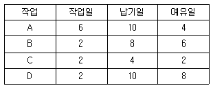
- A - B - C - D
- A - C - B - D
- D - C - B - A
- D - B - C - A
(정답률: 71%)
44. 작업자가 경제적인 동작으로 작업을 수행하기 위한 동작 경제의 원칙에 해당되지 않는 것은?
- 신체의 사용에 관한 원칙
- 배치변경의 유연성의 원칙
- 작업장의 배치에 관한 원칙
- 공구 및 설비 디자인에 관한 원칙
(정답률: 56%)
45. 다중활동분석표 중 2인 이상의 작업자가 조를 이루어 협동적으로 작업하는 경우의 분석에 사용되는 것은?
- Simo Chart
- Operation Chart
- Gang Process Chart
- Man-Multi Machine Chart
(정답률: 70%)
46. 공정 중에 발생하는 모든 작업, 검사, 대기, 운반, 정체 등을 도식화한 것을 무엇이라 하는가?
- Material Handling Chart
- Operation Process Chart
- Assembly Process Chart
- Flow Process Chart
(정답률: 66%)
47. 설비종합효율측정에 사용되는 요소인 성능가동률의 식으로 가장 올바른 것은?
- 이론사이클타임×생산량/가동시간
- 실제사이클타임×생산량/가동시간
- 실제사이클타임×양품량/가동시간
- 이론사이클타임×양품량/가동시간
(정답률: 53%)
48. 관측된 작업 중에서 요소작업에 대한 대표치를 PTS법으로 분석하고, PTS에 의한 시간치와 관측시간치의 비율을 구하여 레이팅계수를 산정 다른 요소작업에 적용시키는 Rating 기법은?
- 합성평가법(Synthetic Rating)
- 속도평가법(Speed Rating)
- 평준화법(Leveling)
- 객관적평가법(Objective Rating)
(정답률: 57%)
49. 설비보전 업무 중 고장의 발생시점을 기준으로 하여 볼 때 사전 보전에 해당되는 것은?
- 수리
- 예방보전
- 폐기
- 구입
(정답률: 84%)
50. 공정간의 균형을 위해 애로공정을 합리적으로 해결해야 한다. 그 방법에 속하지 않은 것은?
- 라인밸런싱
- 시뮬레이션
- 대기행렬이론
- 부하거리법
(정답률: 50%)
51. 다음 중 MRP의 주요 기능으로 볼 수 없는 것은?
- 재고수준 통제
- 우선순위 통제
- 생산능력 통제
- 작업순위 통제
(정답률: 54%)
52. 다음 중 공급자가 복수일 경우와 비교하여 공급자를 일원화할 경우 장점에 해당되지 않는 것은?
- 품질 균일
- 규모의 경제 실현
- 신제품 개발 협력이 용이
- 문제 발생시 공급자 교체 가능
(정답률: 72%)
53. 다음 중 작업자의 습숙과 관련이 가장 깊은 여유는?
- 소로트여유
- 조여유
- 피로여유
- 기계간섭여유
(정답률: 59%)
54. 다음의 [자료]에서 추적지표(TS：Tracking Signal) 값을 구하면 약 얼마인가?
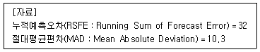
- 0.322
- 3.107
- 263.682
- 329.600
(정답률: 74%)
55. 다음 중 PERT/CPM 이 사용되고 있는 가장 큰 이유는?
- 수율을 향상하기 위해
- 가동율을 향상하기 위해
- 전력 등 원단위를 절감하기 위해
- 시간, 인원, 비용을 최소화하기 위해
(정답률: 78%)
56. ABC 자재관리의 관리방법 중 A품목의 관리방법은?
- 정기발주방식
- 정량발주방식
- 일괄구입방식
- MRP방식
(정답률: 75%)
57. 주문생산 시스템에 관한 내용으로 가장 올바른 것은?
- 동일 품목에 대하여 반복생산이 쉽다.
- 소품종 대량생산에 적합하다.
- 다품종 소량생산에 적합하다.
- 생산의 흐름은 연속적이다.
(정답률: 83%)
58. 납기 예정일이 주어지는 단일설비일정 계획에서 최소 작업지연시간 (Lmax)과 최대 작업지연시간 (Tmax)은 어떤 작업 순위에 의하여 최소화 되는가?
- EDD(Earliest Due Date)
- PCO(Preferred Customer Order)
- 존슨법
- FCFS(First Come First Serviced)
(정답률: 75%)
59. 적시생산시스템(JIT)에 관한 설명으로 틀린 것은?
- 생산의 평준화로 작업부하량이 균일해진다.
- 생산준비시간의 단축으로 리드타임이 단축된다.
- 간판(Kanban)이라는 부품인출시스템을 사용한다.
- 입력정보로 재고대장, 주일정계획, 자재명세서가 요구된다.
(정답률: 55%)
60. 원단위란 제품 또는 반제품의 단위수량 당 자재별 기준소요량을 말한다. 이러한 원단위를 산출하는 데에는 여러 방법이 있다. 다음 중 원단위 산출방법과 거리가 먼 것은?
- 연속치를 고려하는 방법
- 설적치에 의한 방법
- 이론치에 의한 방법
- 시험 분석치에 의한 방법
(정답률: 43%)
4과목: 신뢰성관리
61. 다음 중 소시료 신뢰성 실험에서 메디안순위법의 고장확률밀도함수를 표현한 것으로 옳은 것은? (단, n은 샘플수, i는 고장순번, ti는 i번째 고장발생 시간이다.)
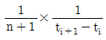
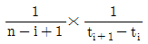
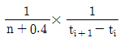
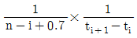
(정답률: 46%)
62. 어떤 시스템의 수리율(μ)이 0.5, 고장율(λ)이 0.09일 때 가용도(Availability)는 약 얼마인가?
- 15.3%
- 84.7%
- 9.37%
- 95.5%
(정답률: 71%)
63. Y 부품의 고장률이 0.5×10-5/시간이다. 하루 24시간씩 1년간 작동한다고 할 때, 이 부품이 1 년 이상 작동할 확률을 구하면 약 얼마인가? (단, 1년간 작동일수는 360일이다.)
- 0.368
- 0.632
- 0.958
- 0.998
(정답률: 47%)
64. 신뢰도가 0.9인 부품과 0.8인 부품이 조합되어 만들어진 기기가 있다. 이 기기는 2개의 부품 중 어느 하나만 작동되면 기능을 발휘할 수 있다고 한다. 이 기기의 신뢰도는 얼마인가?
- 0.28
- 0.72
- 0.92
- 0.98
(정답률: 68%)
65. 10개의 샘플에 대하여 4개가 고장날 때까지 수명시험을 한 결과 10시간, 20시간, 30시간, 40시간에 각각 1개씩 고장이 났다. 이 샘플의 지수분포에 따라 발생한다고 하면 MTBF의 점추정치는 몇 시간인가?
- 25시간
- 34시간
- 85시간
- 100시간
(정답률: 78%)
66. 제품의 신뢰성을 생각할 때 사용자측과 제조자측의 입장을 분리해서 정의한 것은?
- 고유 신뢰성과 동작 신뢰성
- 고유 신뢰성과 사용 신뢰성
- 사용 신뢰성과 동작 신뢰성
- 설계 신뢰성과 사용 신뢰성
(정답률: 75%)
67. 신뢰성 샘플링 검사의 특징에 관한 설명으로 옳지 않은 것은?
- 품질의 척도로 MTBF, λ 등을 사용한다.
- 위험률 와 의 값을 아주 작게 취한다.
- 정시중단과 정수중단방식을 채용하고 있다.
- 지수분포와 와이블 분포를 가정한 방식이 주류를 이루고 있다.
(정답률: 69%)
68. 샘플 54개에 대한 수명시험과결과 [표]와 같은 데이터를 얻었다. 구간 4~5시간에서의 고장율은 약 얼마인가?
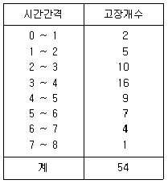
- 0.167/시간
- 0.429/시간
- 0.611/시간
- 0.750/시간
(정답률: 63%)
69. 우선적 AND 게이트가 있는 고장목(Fault Tree)에 관한 설명으로 가장 적절한 것은?
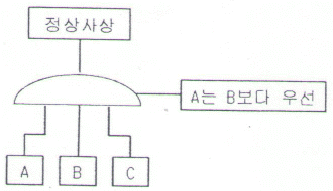
- 입력사상 A, B, C가 모두 발생될 때 정상사상이 발생된다.
- 입력사상 A, B, C가 모두 발생하고 입력사상 A가 B보다 우선적으로 발생될 때 정상사상이 발생된다.
- 입력사상 A, B, C가 모두 발생하고 입력사상 A가 B와 C보다 우선적으로 발생될 때 정상사상이 발생된다.
- 3개의 입력사상 A, B, C 중 2개의 입력사상 A와 B만 발생하고 A가 B보다 우선적으로 발생될 때 정상사상이 발생된다.
(정답률: 68%)
70. 10개의 샘플에 대하여 50시간 수명시험을 한 결과 1개도 고장이 나지 않았다. 이 샘플의 고장이 지수분포에 따라 발생한다고 하면 MTBF의 하한치는 약 몇 시간인가? (단, 신뢰수준 90% 인 경우, MTBF 하한치 추정계수는 2.3이다.)
- 125시간
- 167시간
- 176시간
- 217시간
(정답률: 50%)
71. 1,000시간당 고장률이 각각 2.8, 3.6, 10.2, 3.4 인 부품 4개를 직렬결합으로 설계한다면 이 기기의 평균수명은 약 얼마인가? (단, 각 부품의 고장밀도함수는 지수분포를 따른다.)
- 50시간
- 98시간
- 277시간
- 357시간
(정답률: 44%)
72. 다음과 같이 3개의 부품이 연결된 시스템이 있다. 이 시스템의 신뢰도가 85% 이상이 되도록 설계하려면 부품 RA의 신뢰도는 최소 약 얼마 이상이 되어야 하는가?(단, R1과 R2의 신뢰도는 각각 90%, 80%이다.)
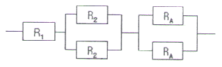
- 0.852
- 0.873
- 0.9⑤
- 0.951
(정답률: 50%)
73. 동일한 부품 2개의 직렬체계에서 용장 부품들을 추가할 때 다음 중 가장 신뢰도가 높은 리던던시 구조는?
- 체계를 병렬 중복
- 부품 수준에서 중복
- 첫째 부품을 3중 병렬 중복
- 둘째 부품을 3중 병렬 중복
(정답률: 55%)
74. 수명분포가 지수분포에 따르고 있는 어떤 기계의 월간 사용시간은 100시간이다. 이 기계의 월간누적 고장확률을 0.1로 하기 위해서 MTBF는 약 몇 시간이 되어야 하는가?
- 4.34시간
- 43.4시간
- 949시간
- 9,490시간
(정답률: 50%)
75. 그림은 고장시간의 전형적 분포를 보여주는 욕조곡선이다. 이 중 B 기간을 분포로 모형화할 때, 어떤 분포가 적절한가?
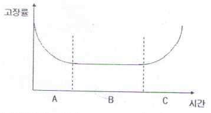
- 지수분포
- 정규분포
- 형상모수가 1보다 큰 와이블 분포
- 형상모수가 1보다 작은 와이블 분포
(정답률: 75%)
76. Y 부품에 가해지는 부하(Stress)는 평균 3,000 kg/mm2, 표준편차 300 kg/mm2이며, 강도는 평균 4,000 kg/mm2, 표준편차 400 kg/mm2인 정규분포를 따른다. 부품의 신뢰도는 약 얼마인가? (단, u0.90=1.282, u0.9772=2, u0.9987=3이다.)
- 90%
- 95.46%
- 97.72%
- 99.87%
(정답률: 71%)
77. 정상사용온도(30℃)에서의 수명이 10,000시간이라면 10℃ 법칙에 의거 가속수명시험온도(130℃) 에서의 수명을 구하면 약 몇 시간인가?
- 10시간
- 12시간
- 14시간
- 16시간
(정답률: 64%)
78. 어떤 장치의 고장 후 수리시간 T는 다음과 같은 파라미터의 값을 갖는 대수정규분포를 한다고 알려져 있다. 이 장치의 40시간에서의 보전도 M(40)는 약 얼마인가? (단, 표준화상수 u값 계산시 소수 셋째자리 이하는 버린다.)
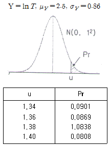
- 0.9099
- 0.9131
- 0.9162
- 0.9192
(정답률: 46%)
79. 다음 중 가속수명시험 설계시 고장 메커니즘을 추론할 때 가장 효과적인 도구는?
- 산점도
- 회귀분석
- 검ㆍ추정
- FMEA/ FTA
(정답률: 65%)
80. 어느 시스템의 고장확률밀도함수를 f(t)라고 할 때, t시점서의 신뢰도(Reliability) 함수 R(t)를 표현한 것으로 옳은 것은?
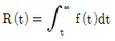
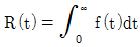
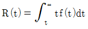
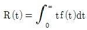
(정답률: 42%)
5과목: 품질경영
81. 품질경영시스템-기본사항 및 용어(KS Q ISO 9000：2007)에서 일반적인 문서화의 구조에 해당되지 않는 것은?
- 절차서
- 약관
- 지침
- 품질매뉴얼
(정답률: 37%)
82. 싱글 PPM 운동에 관한 설명으로 가장 거리가 먼 것은?
- 과거, 현재 및 미래의 품질이 심사대상이다.
- 블랙벨트와 같은 품질전문가를 별도로 운영한다.
- 국내에서 만들어진 품질혁신운동으로 인증을 준다.
- 백만개 중 부적합품수를 한자리수 이하로 낮추려는 혁신운동이다.
(정답률: 63%)
83. 품질관리수법인 신 QC 7가지 기법의 특성으로 가장 거리가 먼 것은?
- 계획을 충실하게 하는 기법이다.
- 주로 언어데이터를 사용하는 기법이다.
- 산포의 원인을 조사해서 공정을 관리함을 목적으로 한다.
- 관계자 전원이 협력해서 문제해결을 조직적ㆍ체계적으로 진척시키는 데에 도움이 된다.
(정답률: 58%)
84. 품질코스트의 한 요소인 실패코스트와 적합비용과의 관계에 관한 설명으로 가장 적절한 것은?
- 적합비용과 실패코스트는 전혀 무관하다.
- 적합비용이 증가되면 실패코스트는 줄어든다.
- 적합비용이 증가되면 실패코스트는 더욱 높아진다.
- 실패코스트는 총 품질코스트 중 극히 일부에 불과하므로 적합비용에 미치는 영향이 매우 적다.
(정답률: 79%)
85. 품질보증의 주요기능 중 가장 나중에 실시하여야 하는 것은?
- 설계품질의 확보
- 품질방침의 설정
- 품질조사와 클레임 처리
- 품질정보의 수집ㆍ해석ㆍ활용
(정답률: 71%)
86. 다음 그래프 중 수량의 크기를 비교할 목적으로 주로 사용하는 것은?
- 연관도
- 점그래프
- 꺾은선 그래프
- 막대그래프
(정답률: 68%)
87. 품질경영시스템-기본사항 및 용어(KS Q ISO 9000：2007)에서 규정하고 있는 용어의 정의로 옳지 않은 것은?
- 절차(Procedure)란 활동 또는 프로세스를 수행하기 위하여 규정된 방식을 말한다.
- 프로세스(Process)란 입력을 출력으로 변환시키는 상호 관련되거나 상호 작용하는 활동의 집합을 말한다.
- 추적성(Traceability)이란 고려 대상에 있는 것의 이력, 적용 또는 위치를 추적하기 위한 능력을 말한다.
- 시정조치(Corrective Active)란 잠재적인 부적합 또는 기타 바람직하지 않은 잠재적 상황의 원인을 제거하기 위한 조치를 말한다.
(정답률: 65%)
88. 현재 사용하고 있는 것에 대한 취약점을 나열하고 이것을 없애는 방법을 찾아내는 아이디어 발상법은?
- 고든법
- 결점열거법
- 특성열거법
- 브레인스토밍
(정답률: 78%)
89. 사용품질에 관한 설명으로 가장 적절한 것은?
- 제공되는 제품이 고객의 기대수준에 얼마가 벗어나 있나를 기준으로 하는 것을 사용품질 차이라 한다.
- 고객이 제품의 사용으로 얼마만큼 만족을 얻을 수 있나를 기준으로 하는 것을 제품품질 차이라 한다.
- 제품품질 차이의 축소는 설계품질 차이와 제조품질 차이를 좁혀서 할 수 있다.
- 전통적인 품질관리는 다분히 사용품질의 차이의 축소 내지 제거를 목적으로 한 것이었다.
(정답률: 38%)
90. 사내표준화의 주된 효과로 보기에 가장 거리가 먼 것은?
- 개인의 기능을 기업의 기술로서 보존하여 진보를 위한 역할을 한다.
- 업무의 방법을 일정한 상태로 고정하여 움직이지 않게 하는 역할을 한다.
- 관리를 위한 기준이 되며 확률이론을 적용할 수 있고 통계적 수법을 활용할 수 있다.
- 경영방침을 철저히 하여 책임과 권한을 명확히 하고 업무운영을 확실히 하는 역할을 한다.
(정답률: 64%)
91. 표준서의 서식 및 작성방법(KS A 0001：2008)에서 규정하고 있는 표준의 요소에 관한 설명으로 옳지 않은 것은?
- “참고(Reference)”는 규정의 일부는 아니다.
- “해설(Explanation)”은 표준의 일부는 아니다.
- “본문(Text)”은 조항의 구성부분의 주체가 되는 문장이다.
- “보기(Example)”는 본문, 그림, 표 안에 직접 넣으면 복잡하게 되므로 따로 기재하는 것이다.
(정답률: 60%)
92. 규격상한이 70, 규격하한이 10인 어떤 제품을 제조하는 제조공정에서 만들어진 제품의 표준편차는 7.5이다. 이 제조공정이 관리상태에 있다고 할 때 공정능력지수 (CP)는 약 얼마인가?
- 0.66
- 1.00
- 1.33
- 2.67
(정답률: 70%)
93. 어떤 조립품의 구멍과 축의 치수가 표와 같이 주어질 때 최대틈새는 얼마인가?
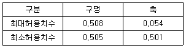
- 0.001
- 0.003
- 0.004
- 0.007
(정답률: 87%)
94. 생산활동이나 관리활동과 관련하여 일상적 또는 정기적으로 실시하는 계측과 가장 거리가 먼 것은?
- 생산설비에 관한 계측
- 자재ㆍ에너지에 관한 계측
- 작업결과나 성적에 관한 계측
- 연구ㆍ실험실에서의 시험연구 계측
(정답률: 74%)
95. 품질에 대하여 구성원들의 품질개선 의욕을 불러일으키는 작용 또는 과정을 뜻하는 용어는?
- 품질 인프라(Infra)
- 품질 피드백(Feedback)
- 품질 퍼포먼스(Performance)
- 품질 모티베이션(Motivation)
(정답률: 86%)
96. 품질관리의 기능은 4개의 기능으로 대별하여 사이클을 형성한다. 다음 중 품질관리의 기능에 포함되지 않는 것은?
- 품질의 관리
- 품질의 보증
- 공정의 관리
- 품질의 조사 및 개선
(정답률: 61%)
97. 산업표준화법 시행령에는 규정에 의한 산업표준화 및 품질경영에 대한 교육을 반드시 받아야하는데, 이에 해당되는 것은?
- 직반장 교육
- 작업자 교육
- 내부품질심사요원 양성교육
- 경영간부교육(생산ㆍ품질부문 팀장급 이상)
(정답률: 85%)
98. 제조물책임법의 근거가 되는 3가지의 법률이론이 아닌 것은?
- 사용책임
- 엄격책임
- 과실책임
- 보증책임
(정답률: 48%)
99. 다음 중 품질보증부문의 임무를 가장 적절하게 표현한 것은?
- 부적합품 출하방지를 위한 최종검사
- 부적합품의 발생억제를 위한 공정관리
- 고객요구를 최대로 만족시키는 품질설계
- 각 부서의 품질보증활동의 종합조정통제
(정답률: 52%)
100. 산업표준화 유형 중 기능에 따른 표준화 분류의 내용으로 옳지 못한 것은?
- 제품규격：제품의 형태, 치수, 재질 등 완제품에 사용되는 규격
- 방법규격：성분분석 및 시험방법, 제품의 검사방법, 사용방법에 대한 규격
- 기본규격：표준의 제정, 개폐절차 등에 대한 규격
- 전달규격：계량단위, 제품의 용어, 기호 및 단위 물질과 행위에 관한 규격
(정답률: 66%)
ab2과 c는 P와 Q가 모두 포함하지 않으므로 기본 표시가 아니다.
abc과 bc2는 P와 Q가 모두 포함하지만, abc2과 ab2를 포함하지 않으므로 기본 표시가 아니다.
ab2과 bc2는 P와 Q가 모두 포함하지만, abc2과 ab2를 포함하지 않으므로 기본 표시가 아니다.
따라서 정답은 "abc2과 ab2인 두열"이다.